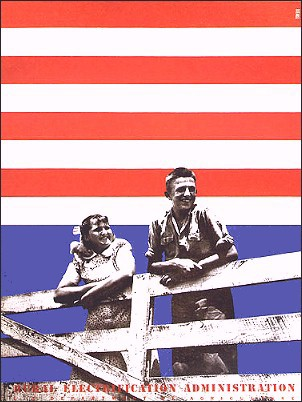

Rural Electrification Projectby Richard Brautigan
| |
 |
I was trying to describe you to someone a few days ago. You don't look like any girl I've ever seen before.
I couldn't say "Well she looks just like Jane Fonda, except that she's got red hair, and her mouth is different and of course, she's not a movie star..." I couldn't say that because you dont look like Jane Fonda at all. I finally ended up describing you as a movie I saw when I was a child in Tacoma Washington. I guess I saw it in 1941 or 42, somewhere in there. I think I was seven, or eight, or six. It was a movie about rural electrification, a perfect 1930's New Deal morality kind of movie to show kids. The movie was about farmers living in the country without electricity. They had to use lanterns to see by at night, for sewing and reading, and they didn't have any appliances like toasters or washing machines, and they couldn't listen to the radio. They built a dam with big electric generators and they put poles across the countryside and strung wire over fields and pastures. There was an incredible heroic dimension that came from the simple putting up of poles for the wires to travel along. They looked ancient and modern at the same time. Then the movie showed electricity like a young Greek god, coming to the farmer to take away forever the dark ways of his life. Suddenly, religiously, with the throwing of a switch, the farmer had electric lights to see by when he milked his cows in the early black winter mornings. The farmer's family got to listen to the radio and have a toaster and lots of bright lights to sew dresses and read the newspaper by. It was really a fantastic movie and excited me like listening to the Star Spangled Banner, or seeing photographs of President Roosevelt, or hearing him on the radio "... the President of the United States... " I wanted electricity to go everywhere in the world. I wanted all the farmers in the world to be able to listen to President Roosevelt on the radio.... And that's how you look to me. |